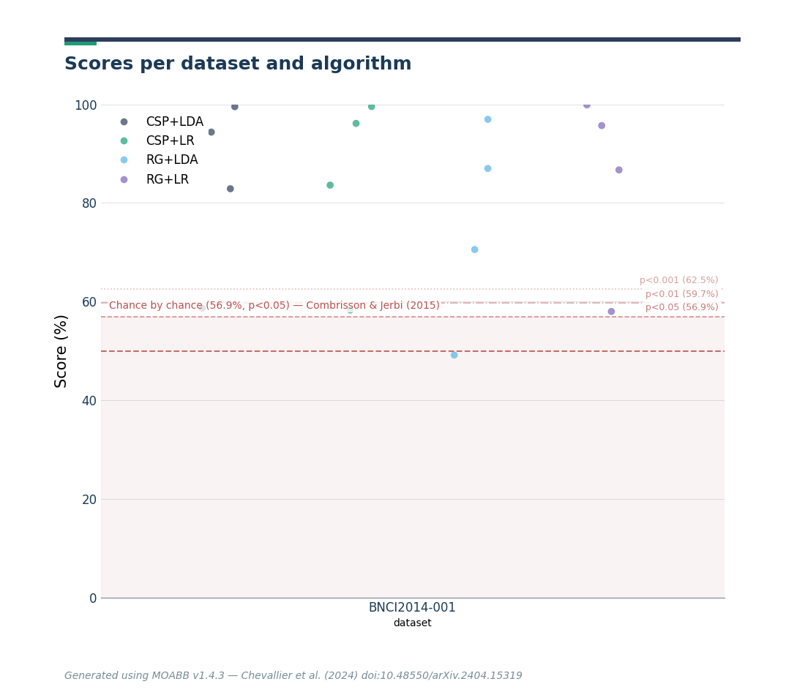
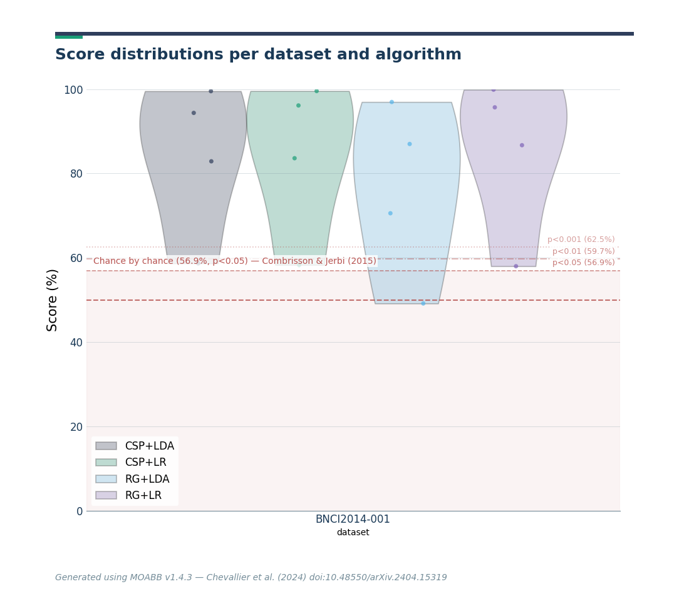
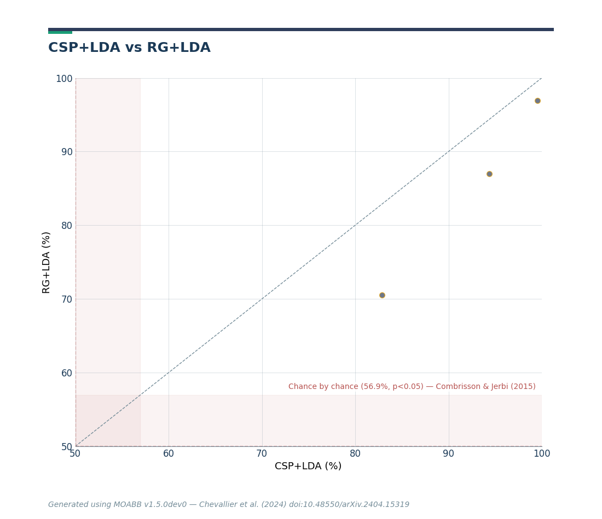
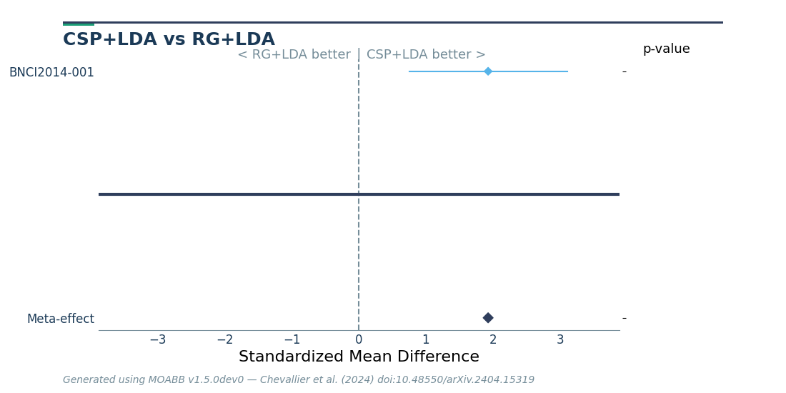
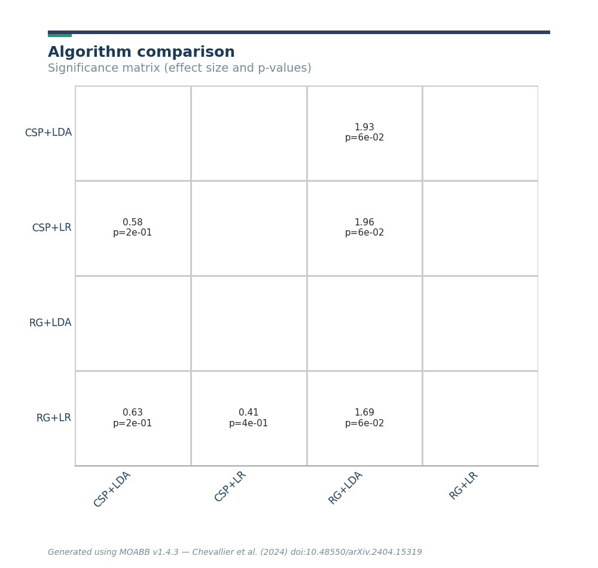

Note
Go to the end to download the full example code.
Statistical Analysis and Chance Level Assessment#
The MOABB codebase comes with convenience plotting utilities and some statistical testing. This tutorial focuses on what those exactly are and how they can be used.
In addition, we demonstrate how to compute and visualize statistically adjusted chance levels following Combrisson & Jerbi (2015). The theoretical chance level (100/c %) only holds for infinite sample sizes. With finite test samples, classifiers can exceed this threshold purely by chance — an effect that grows stronger as the sample size decreases. The adjusted chance level, derived from the inverse survival function of the binomial distribution, gives the minimum accuracy needed to claim statistically significant decoding at a given alpha level.
# Authors: Vinay Jayaram <vinayjayaram13@gmail.com>
#
# License: BSD (3-clause)
# sphinx_gallery_thumbnail_number = -2
import matplotlib.pyplot as plt
from mne.decoding import CSP
from pyriemann.estimation import Covariances
from pyriemann.tangentspace import TangentSpace
from sklearn.discriminant_analysis import LinearDiscriminantAnalysis as LDA
from sklearn.linear_model import LogisticRegression
from sklearn.pipeline import make_pipeline
import moabb
import moabb.analysis.plotting as moabb_plt
from moabb.analysis.chance_level import (
adjusted_chance_level,
chance_by_chance,
)
from moabb.analysis.meta_analysis import ( # noqa: E501
compute_dataset_statistics,
find_significant_differences,
)
from moabb.datasets import BNCI2014_001
from moabb.evaluations import CrossSessionEvaluation
from moabb.paradigms import LeftRightImagery
moabb.set_log_level("info")
print(__doc__)
Results Generation#
First we need to set up a paradigm, dataset list, and some pipelines to test. This is explored more in the examples – we choose left vs right imagery paradigm with a single bandpass. There is only one dataset here but any number can be added without changing this workflow.
Create Pipelines#
Pipelines must be a dict of sklearn pipeline transformer.
The CSP implementation from MNE is used. We selected 8 CSP components, as usually done in the literature.
The Riemannian geometry pipeline consists in covariance estimation, tangent space mapping and finally a logistic regression for the classification.
pipelines = {}
pipelines["CSP+LDA"] = make_pipeline(CSP(n_components=8), LDA())
pipelines["RG+LR"] = make_pipeline(Covariances(), TangentSpace(), LogisticRegression())
pipelines["CSP+LR"] = make_pipeline(CSP(n_components=8), LogisticRegression())
pipelines["RG+LDA"] = make_pipeline(Covariances(), TangentSpace(), LDA())
Evaluation#
We define the paradigm (LeftRightImagery) and the dataset (BNCI2014_001). The evaluation will return a DataFrame containing a single AUC score for each subject / session of the dataset, and for each pipeline.
Results are saved into the database, so that if you add a new pipeline, it will not run again the evaluation unless a parameter has changed. Results can be overwritten if necessary.
paradigm = LeftRightImagery()
dataset = BNCI2014_001()
dataset.subject_list = dataset.subject_list[:4]
datasets = [dataset]
overwrite = True # set to False if we want to use cached results
evaluation = CrossSessionEvaluation(
paradigm=paradigm, datasets=datasets, suffix="stats", overwrite=overwrite
)
results = evaluation.process(pipelines)
BNCI2014-001-CrossSession: 0%| | 0/4 [00:00<?, ?it/s]
BNCI2014-001-CrossSession: 25%|██▌ | 1/4 [00:22<01:07, 22.50s/it]
BNCI2014-001-CrossSession: 50%|█████ | 2/4 [00:45<00:45, 23.00s/it]
BNCI2014-001-CrossSession: 75%|███████▌ | 3/4 [01:08<00:23, 23.02s/it]
BNCI2014-001-CrossSession: 100%|██████████| 4/4 [01:31<00:00, 22.91s/it]
BNCI2014-001-CrossSession: 100%|██████████| 4/4 [01:31<00:00, 22.91s/it]
Chance Level Computation#
The theoretical chance level for a c-class problem is 100/c (e.g. 50% for 2 classes). However, this threshold assumes an infinite number of test samples. In practice, with a finite number of trials, a classifier can exceed the theoretical chance level purely by chance — especially when the sample size is small.
Combrisson & Jerbi (2015) demonstrated that classifiers applied to pure Gaussian noise can yield accuracies well above the theoretical chance level when the number of test samples is limited. For example, with only 40 observations in a 2-class problem, a decoding accuracy of 70% can occur by chance alone, far above the 50% theoretical threshold.
To address this, they proposed computing a statistically adjusted chance level using the inverse survival function of the binomial cumulative distribution. This gives the minimum accuracy required to claim that decoding significantly exceeds chance at a given significance level alpha. Stricter alpha values (e.g. 0.001 vs 0.05) require higher accuracy to assert significance.
Note that the number of classes depends on the paradigm, not the raw dataset. BNCI2014_001 has 4 motor imagery classes, but LeftRightImagery selects only left_hand and right_hand (2 classes).
n_classes = len(paradigm.used_events(dataset))
print(f"Number of classes (from paradigm): {n_classes}")
# theoretical chance level: 1 / n_classes
print(f"Theoretical chance level: {1.0 / n_classes:.2f}")
# Adjusted chance level for 144 test trials at alpha=0.05
# (BNCI2014_001 has 144 trials per class per session)
n_test_trials = 144 * n_classes
print(
f"Adjusted chance level (n={n_test_trials}, alpha=0.05): "
f"{adjusted_chance_level(n_classes, n_test_trials, 0.05):.4f}"
)
Number of classes (from paradigm): 2
Theoretical chance level: 0.50
Adjusted chance level (n=288, alpha=0.05): 0.5486
The convenience function chance_by_chance() reads
n_samples_test and n_classes directly from the results DataFrame,
so no dataset objects are needed.
chance_levels = chance_by_chance(results, alpha=[0.05, 0.01, 0.001])
print("\nChance levels:")
for name, levels in chance_levels.items():
print(f" {name}:")
print(f" Theoretical: {levels['theoretical']:.2f}")
for alpha, threshold in sorted(levels["adjusted"].items()):
print(f" Adjusted (alpha={alpha}): {threshold:.4f}")
Chance levels:
BNCI2014-001:
Theoretical: 0.50
Adjusted (alpha=0.001): 0.6250
Adjusted (alpha=0.01): 0.5972
Adjusted (alpha=0.05): 0.5694
MOABB Plotting with Chance Levels#
Here we plot the results using the convenience methods within the toolkit.
The score_plot visualizes all the data with one score per subject for
every dataset and pipeline.
By passing the chance_level parameter, the plot draws the correct
theoretical chance level line and, when adjusted levels are available, also
draws significance threshold lines at each alpha level.
fig, _ = moabb_plt.score_plot(results, chance_level=chance_levels)
plt.show()

/home/runner/work/moabb/moabb/moabb/analysis/plotting.py:420: UserWarning: The palette list has more values (6) than needed (4), which may not be intended.
sea.stripplot(
Distribution Plot with KDE#
The distribution_plot combines a violin plot (showing the KDE density
of scores) with a strip plot (showing individual data points). This gives
a richer view of score distributions compared to the strip plot alone.
fig, _ = moabb_plt.distribution_plot(results, chance_level=chance_levels)
plt.show()

/home/runner/work/moabb/moabb/moabb/analysis/plotting.py:521: UserWarning: The palette list has more values (6) than needed (4), which may not be intended.
sea.violinplot(
/home/runner/work/moabb/moabb/moabb/analysis/plotting.py:536: UserWarning: The palette list has more values (6) than needed (4), which may not be intended.
sea.stripplot(
Paired Plot with Chance Level#
For a comparison of two algorithms, the paired_plot shows performance
of one versus the other. When chance_level is provided, the axis limits
are adjusted accordingly and dashed crosshair lines mark the theoretical
chance level. When adjusted significance thresholds are included, a shaded
band highlights the region that is not significantly above chance.
fig = moabb_plt.paired_plot(results, "CSP+LDA", "RG+LDA", chance_level=chance_levels)
plt.show()

Statistical Testing and Further Plots#
If the statistical significance of results is of interest, the method
compute_dataset_statistics allows one to show a meta-analysis style plot
as well. For an overview of how all algorithms perform in comparison with
each other, the method find_significant_differences and the
summary_plot are possible.
stats = compute_dataset_statistics(results)
P, T = find_significant_differences(stats)
The meta-analysis style plot shows the standardized mean difference within each tested dataset for the two algorithms in question, in addition to a meta-effect and significance both per-dataset and overall.
fig = moabb_plt.meta_analysis_plot(stats, "CSP+LDA", "RG+LDA")
plt.show()

The summary plot shows the effect and significance related to the hypothesis that the algorithm on the y-axis significantly outperformed the algorithm on the x-axis over all datasets.
moabb_plt.summary_plot(P, T)
plt.show()

Total running time of the script: (1 minutes 37.568 seconds)
Run this example